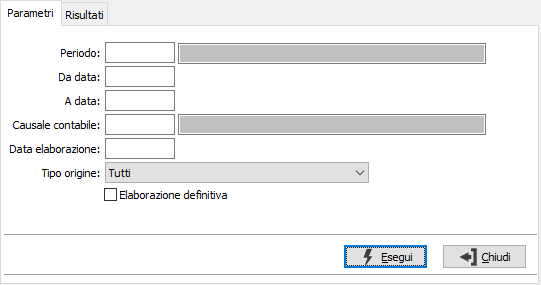
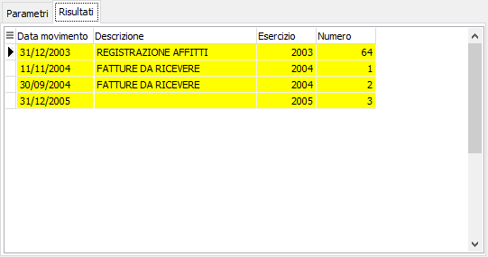

Contabilizzazione movimenti di rettifica
Il programma consente di generare in prima nota i movimenti di rettifica; l'elaborazione può essere effettuata di prova e definitiva.

PERIODO: inserire il periodo per cui si desidera effettuare la contabilizzazione. L'inserimento del periodo determina la valorizzazione delle date di elaborazione e la selezione dei soli movimenti dove presente il periodo. Sul campo sono attive le funzioni di ricerca (F9) sulla tabella stessa.
DA DATA: indicare la data dalla quale si desidera iniziare l’elaborazione.
A DATA: indicare la data alla quale si desidera terminare l’elaborazione.
CAUSALE CONTABILE: indicare la causale contabile con cui devono essere generati i movimenti in contabilità. Sul campo è attiva la funzione di ricerca (F9) sulla tabella stessa.
DATA ELABORAZIONE: indicare la data da utilizzare come data di registrazione dei movimenti contabili.
TIPO ORIGINE: consente di specificare l'origine dei movimenti che devono essere contabilizzati; con l'opzione Tutti non sarà considerata l'origine come filtro, altrimenti è possibile scegliere:
Manuale
Generazione rettifiche
Fatture da ricevere
Fatture da emettere
ELABORAZIONE DEFINITIVA: definisce il tipo di elaborazione: provvisoria (casella vuota) oppure definitiva (casella con segno di spunta). L'elaborazione provvisoria può essere effettuata più volte e non aggiorna nessuna tabella.
La pressione sul pulsante Esegui determina l'inizio dell'elaborazione dei documenti. Il risultato viene visualizzato nella pagina 'Risultati'.

Nella pagina vengono visualizzati i movimenti che saranno generati in contabilità; in questa fase è possibile selezionare o togliere la selezione, con il doppio clic del mouse, ai singoli movimenti.
La pressione del pulsante Salva sulla toolbar, dopo la richiesta di conferma, darà inizio alla definitiva registrazione.